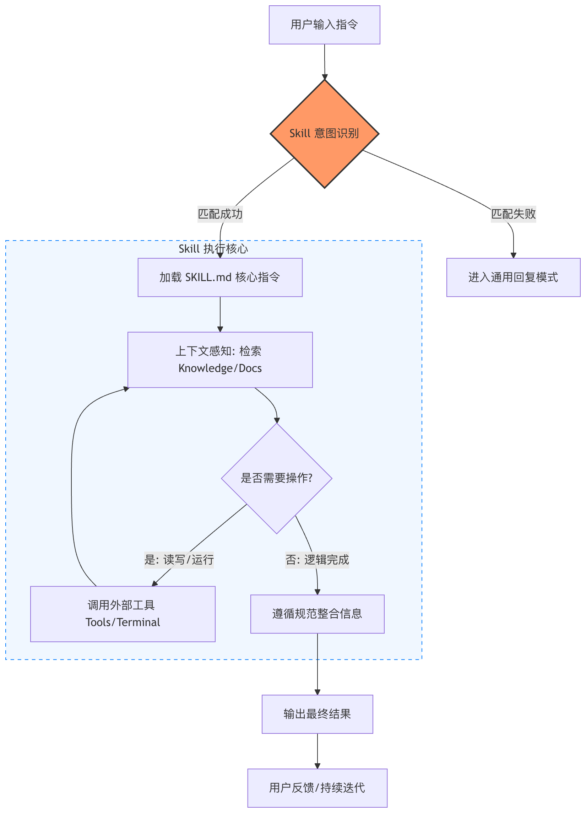
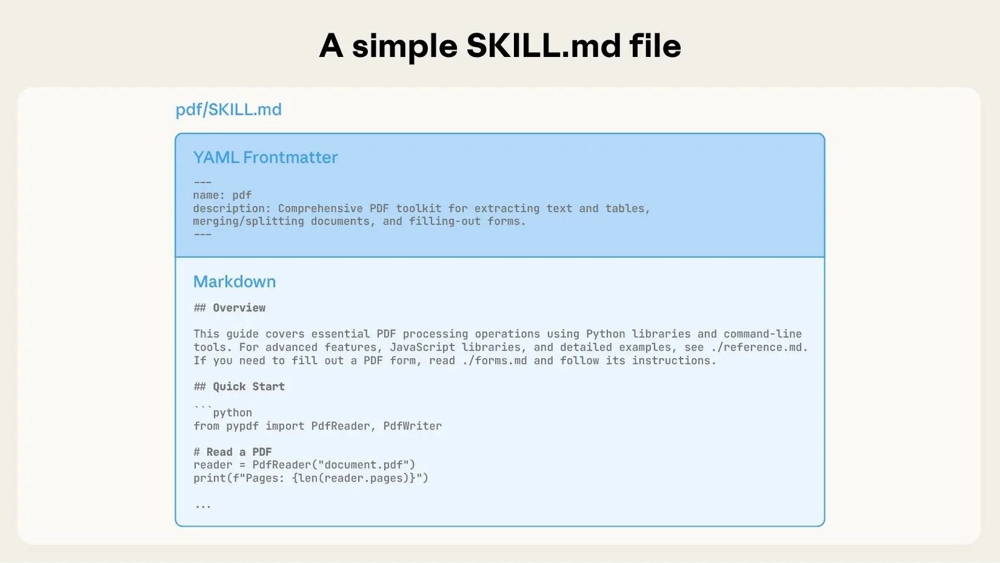
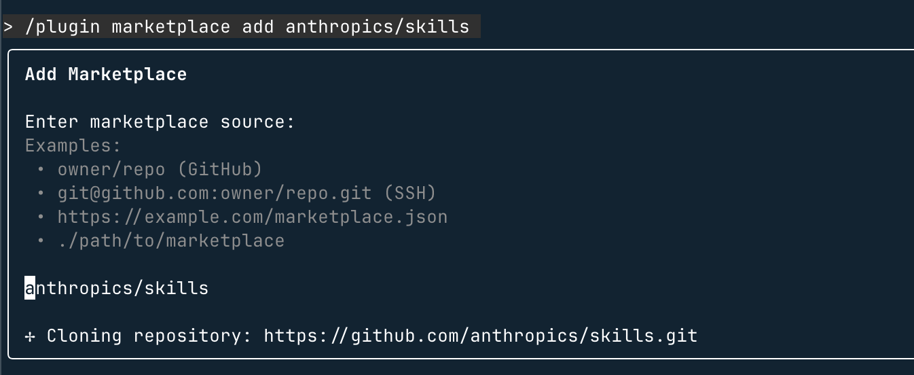
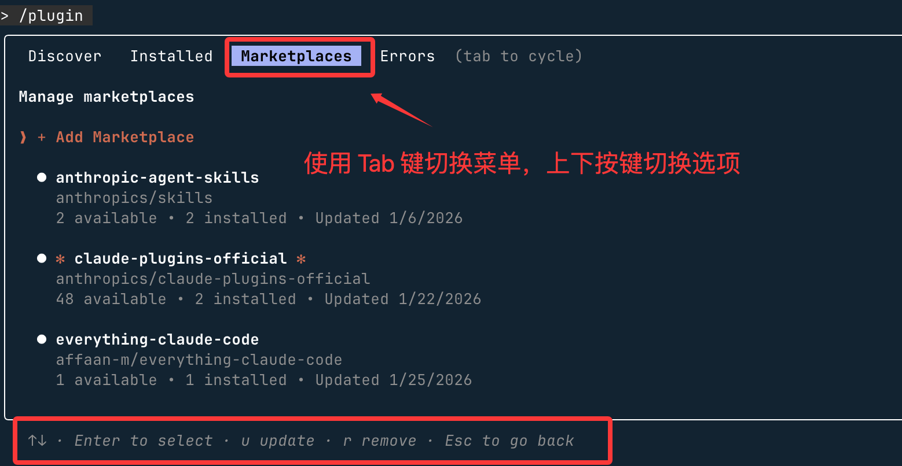
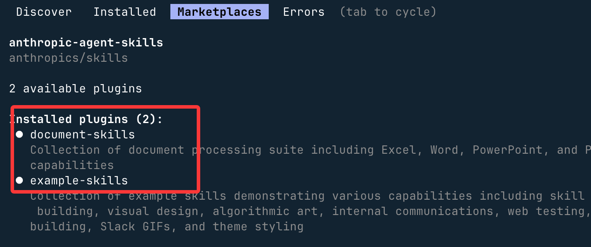
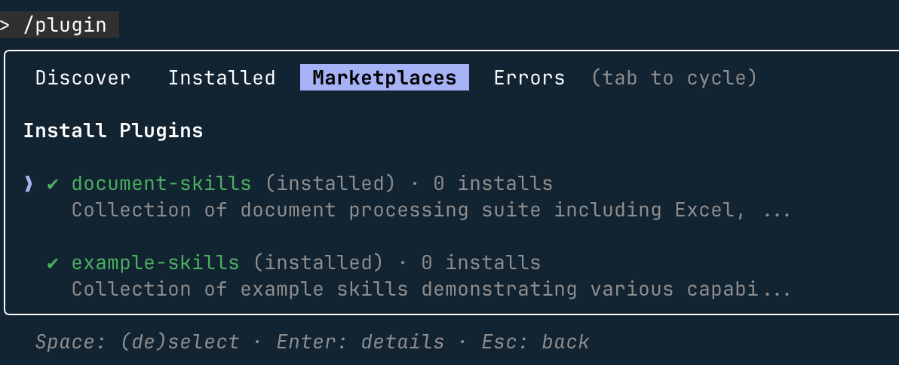
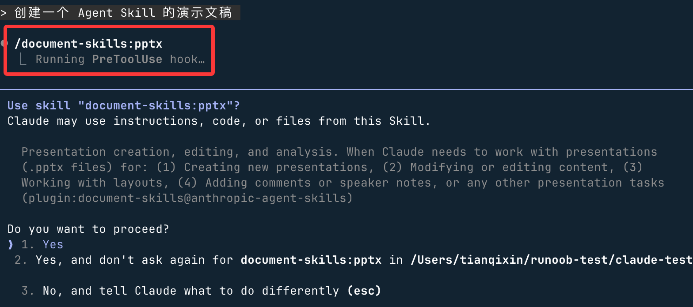
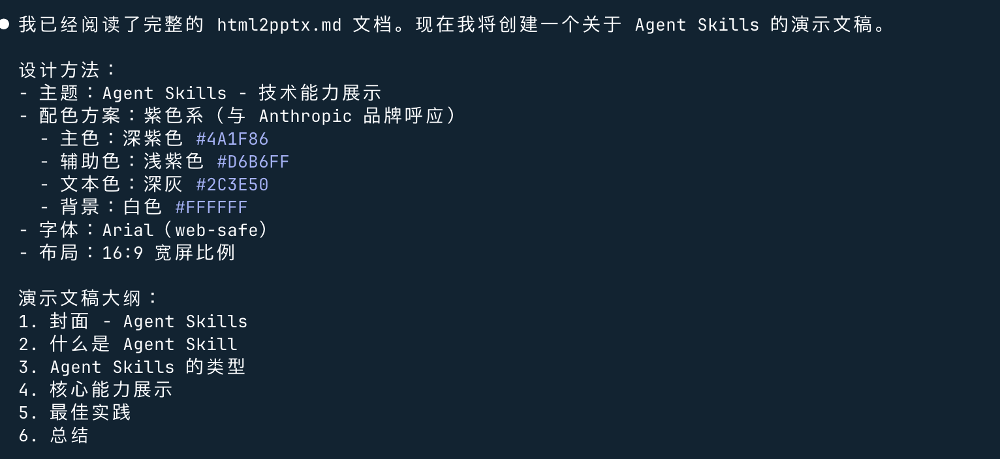
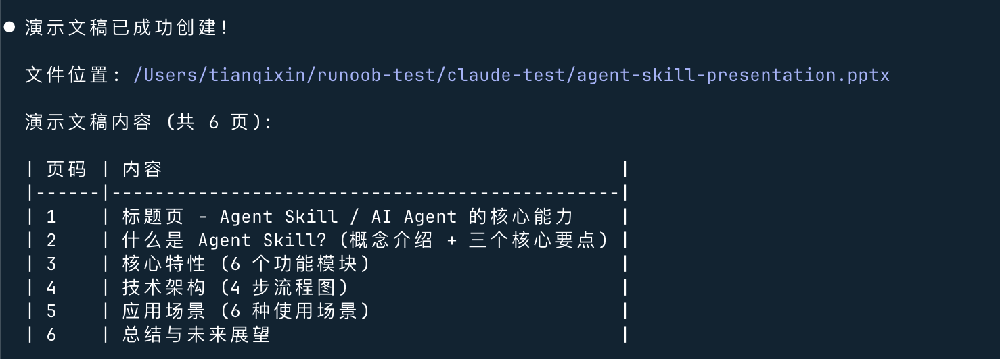

Agent Skills (habilidades de agentes)
Agent significa agente, Skills significa habilidades. Agent Skills (habilidades de agente) es una herramienta central que convierte el conocimiento experto y las normas de flujo de trabajo en activos reutilizables.
En esencia, Agent Skills es un archivo Markdown modular que puede enseñar a herramientas de IA (como Claude, GitHub Copilot, Cursor, etc.) a realizar tareas específicas, y admite activación automática, uso compartido en equipo y gestión de ingeniería, eliminando por completo la entrada repetitiva de prompts.
La esencia de Agent Skills no es una herramienta, sino:
la combinación de normas de comportamiento + conocimiento experto + momento de uso.
Referencia del contenido básico de Skills:Tutorial de Skills
Forma principal:
Un Skill es una carpeta que debe contener un archivo SKILL.md (con descripción y metadatos) y opcionalmente otros archivos de recursos (como scripts, ejemplos, documentos de referencia).
-
Un Skill es un archivo Markdown (SKILL.md) que se utiliza para enseñar a Claude a hacer las cosas a tu manera en escenarios específicos.
En esencia, es como entregar un manual profesional al agente de IA; la IA no aprende desde cero cada vez, sino que invoca automáticamente el conocimiento del manual según la tarea.
-
En pocas palabras, antes usábamos prompts para enseñar a la IA a hacer cosas; ahora con Agent Skills podemos empaquetar prompts + recursos en paquetes de habilidades reutilizables y compartibles, más eficientes y fiables.

Cómo funcionan las Agent Skills
La clave de Agent Skills es la divulgación progresiva, que se carga en tres niveles:
- Nivel 1: Descubrimiento de habilidades-- La IA primero lee los metadatos de todas las habilidades (name y description) para determinar si la tarea es relevante; estos metadatos están siempre en el prompt del sistema.
- Nivel 2: Carga de instrucciones principales-- Si es relevante, la IA lee automáticamente el contenido del cuerpo de SKILL.md para obtener instrucciones detalladas.
- Nivel 3: Carga de archivos de recursos-- Solo cuando sea necesario, lee archivos adicionales (como scripts, ejemplos) o ejecuta scripts mediante herramientas.
Herramientas y entornos compatibles
Actualmente es compatible principalmente con:
- Claude（Anthropic）：Claude.ai、Claude Code、Agent SDK。
- VS Code + GitHub Copilot: habilidades a nivel de proyecto (.github/skills/) o a nivel personal.
- Cursor: habilidades a nivel de proyecto (.cursor/skills/) o globales, con soporte para instalación desde GitHub.
- Otros: en expansión, el estándar de código abierto está enhttps://github.com/agentskills/agentskills。
¿Por qué se necesitan Skills? ¿Qué problemas resuelven?
Los agentes de IA comunes (como Claude o Copilot) son muy inteligentes, pero tienden a equivocarse cuando carecen de contexto específico. Por ejemplo:
- El equipo tiene sus propias normas de código, pero hay que recordárselas manualmente a la IA cada vez.
- Para flujos complejos como procesar formularios PDF o depurar GitHub Actions, la IA puede no conocer las mejores prácticas.
Agent Skills resuelve estos problemas:
- Activación automática: la IA carga automáticamente las habilidades relevantes según la tarea, sin necesidad de escribir prompts largos manualmente.
- Reutilizable y compartible: se crea una vez y puede usarse en todo el equipo o la comunidad, con soporte de control de versiones Git.
- Uso eficiente del contexto: utiliza la divulgación progresiva (progressive disclosure), cargando solo las partes necesarias para evitar desbordar la ventana de contexto.
- Multiplataforma: el mismo Skill se puede usar en herramientas como Claude, VS Code Copilot, Cursor, etc.
Comprensión rápida de los conceptos clave
| Concepto | Analogía | Función |
|---|---|---|
| Skill (habilidad) | Una navaja suiza independiente o una receta de cocina | Un conjunto completo para realizar una tarea específica (como redactar correos, analizar datos). |
| Instruction (instrucción) | El manual de instrucciones de la herramienta o los pasos de la receta | Le dice a Claude exactamente qué hacer, cómo pensar y qué formato de salida usar. |
| Knowledge (conocimiento) | La lista de piezas de la herramienta o la información de fondo de los ingredientes de la receta | Subir archivos (como manuales de producto, documentación de API) como base de conocimientos exclusiva del Skill. |
| Tool (herramienta) | Accesorios especiales de la herramienta (como un destapador) | Define las API o funciones externas que el Skill puede invocar para obtener datos o realizar operaciones. |
Flujo de ejecución de un Skill
Comenzando desde la instrucción del usuario, primero se realiza el reconocimiento de la intención del Skill para decidir si se entra en la ruta de ejecución controlada.
Una vez que se activa el Skill, el sistema carga SKILL.md, establece permisos de herramientas y límites de comportamiento, y luego razona en combinación con el contexto.
Solo cuando realmente sea necesario se invocan las herramientas externas permitidas; de lo contrario, la lógica se completa dentro de las reglas.
El resultado final se genera después de la integración de restricciones, y la siguiente entrada del usuario desencadena una nueva ronda del flujo completo.

Estructura mínima de un Skill
my-skill/ └── SKILL.md （唯一必需）
Plantilla básica de SKILL.md:
--- name: your-skill-name description: What it does and when Claude should use it --- # Skill Title ## Instructions Clear, concrete, actionable rules. ## Examples - Example usage 1 - Example usage 2 ## Guidelines - Guideline 1 - Guideline 2
Campos de metadatos:
| Campo | ¿Obligatorio? | Descripción |
|---|---|---|
| name | 否 | Nombre visible del Skill; por defecto se usa el nombre del directorio. Solo admite letras minúsculas, números y guiones (máximo 64 caracteres). |
| description | Recomendado | Propósito y casos de uso de la habilidad; Claude lo usa para decidir si aplicarla automáticamente. |
| argument-hint | 否 | Sugerencia de parámetros que se muestra durante la autocompletación, por ejemplo[issue-number]、[filename] [format] |
| disable-model-invocation | 否 | Establecer entrueProhíbe que Claude se active automáticamente; solo manual/nameinvocación (por defecto false) |
| user-invocable | 否 | Establecer enfalse 从 /oculto en el menú, se usa como capacidad de mejora en segundo plano (por defecto true) |
| allowed-tools | 否 | Herramientas que Claude puede usar sin autorización cuando el Skill está activo |
| model | 否 | Modelo utilizado cuando el Skill está activo |
| context | 否 | Establecer enforkejecutar en el contexto de un subagente |
| agent | 否 | Tipo de subagente (para usar con context: fork) |
| hooks | 否 | Configuración de hooks del ciclo de vida de la habilidad |
Skills admite insertar variables dinámicas en el contenido:
| Variable | Descripción |
|---|---|
$ARGUMENTS |
Todos los parámetros pasados al invocar el Skill |
$ARGUMENTS[N] |
Acceso a parámetros por índice, por ejemplo$ARGUMENTS[0] |
$N |
Forma abreviada, por ejemplo$0representa el primer parámetro |
${CLAUDE_SESSION_ID} |
ID de sesión actual, para registros, archivos temporales y salidas vinculadas |
Por ejemplo:
---
name: session-logger
description: 记录当前会话活动
---
请将以下内容写入日志文件：
logs/${CLAUDE_SESSION_ID}.log
$ARGUMENTS
Invocación:
/session-logger 用户登录成功
En realidad se generará un registro de sesión exclusivo.
Componentes principales del archivo SKILL.md
Tomando como ejemplo la habilidad de edición de documentos PDF de Claude: Claude puede analizar PDF de forma nativa, pero no puede manipularlos directamente (como rellenar formularios); esta habilidad cubre esa deficiencia.
- Forma principal:Un directorio que contiene SKILL.md
- Metadatos obligatorios:El bloque YAML al inicio de SKILL.md debe incluir name (nombre) y description (descripción); se precarga al prompt del sistema al iniciar.

Skill de múltiples archivos (divulgación progresiva)
Mecanismo de divulgación progresiva
- Primera capa: metadatos → permite a Claude determinar los escenarios aplicables de la habilidad sin cargar todo el contenido.
- Segunda capa: cuerpo de SKILL.md → una vez que se determina que es relevante, se carga el contexto completo.
- Tercera capa en adelante: archivos adjuntos (como forms.md) → se referencian según sea necesario, reduciendo el tamaño del archivo principal.
La siguiente figura muestra cómo cambia la ventana de contexto cuando un mensaje del usuario activa una habilidad:

- Estado inicial: la ventana de contexto contiene el prompt del sistema, los metadatos de la habilidad y las instrucciones del usuario.
- Invocar la herramienta Bash para leer el SKILL.md objetivo y activar la habilidad correspondiente.
- Cargar archivos adjuntos bajo demanda (como forms.md)
- Ejecutar la tarea del usuario después de la carga
Estructura de directorio recomendada
Para evitar la expansión del contexto:
- Reglas principales →
SKILL.md - Información detallada → archivos separados
- Lógica práctica → ejecución de scripts (sin cargar)
Estructura recomendada:
my-skill/
├── SKILL.md
├── reference.md
├── examples.md # 存放示例文件
└── scripts/
└── helper.py
Tu primer Skill
Olvidemos por ahora el complejo proceso de creación, comencemos porusar un Skill existentey experimentemos la comodidad que aporta.
Crear el directorio del Skill
Los Skills se almacenan en~/.claude/skills/(global personal) o en el directorio del proyecto.claude/skills/(específico del proyecto).
En este capítulo probaremos en el directorio del proyecto; primero crea un directorio claude-test:
mkdir claude-test
Entra en ese directorio y crea el directorio y los archivos de skills:
mkdir -p .claude/skills/python-naming-standard
Escribir el archivo de configuración SKILL.md
Crea SKILL.md en el directorio; es el cerebro del Skill, le dice a Claude cuándo usarlo.
--- name: Python 内部命名规范技能 description: 当用户要求重构、审查或编写 Python 代码时，请参考此规范。 --- ## 指令 1. 所有的内部辅助函数必须以 `_internal_` 前缀命名。 2. 如果发现不符合此规则的代码，请自动提出修改建议。 3. 在执行 `claude commit` 前，必须检查此规范。 ## 参考示例 - 正确：`def _internal_calculate_risk():` - 错误：`def _calculate_risk():`
Requisitos de campos:
- name: debe usar solo minúsculas, números y guiones (máximo 64 caracteres)
- description: descripción breve del Skill y cuándo usarlo (máximo 1024 caracteres)
Una vez creado, la estructura de archivos es la siguiente:

Tu proyecto ahora debería verse así:
my-project/ ├─ src/ │ └─ test.py # 项目源码 ├─ .claude/ │ ├─ skills/ │ │ └─ hello-world/ │ │ ├─ skill.md # Skill 定义（YAML + Instructions，机器可执行） │ │ └─ README.md # Skill 说明（人类阅读，可选） │ └─ config.yml # Claude 项目级配置（可选） ├─ .gitignore └─ README.md # 项目整体说明
A continuación, ejecuta el siguiente comando en la terminal para iniciar Claude Code:
claude
Introduce la tarea:
帮我写一个计算用户折扣的函数
Claude escaneará los Skills instalados, detectará que tu solicitud involucra "escritura de código Python" y coincidirá con python-naming-standard.

Según los requisitos de SKILL.md, generará el siguiente código:
def _internal_get_discount(user_score):
# 计算逻辑...
return discount
Agregar archivos de recursos (opcional)
Además, podemos.claude/skills/agregar los siguientes directorios en:
Agregar en la misma carpeta:
examples/: almacenar archivos de ejemplo.references/: almacenar documentos de referencia.scripts/: almacenar scripts ejecutables (por ejemplo, Python para procesar PDF).
Luego, hacer referencia a ellos en SKILL.md:
查看示例 commit：./examples/good-commit.txt 运行脚本：使用工具执行 ./scripts/process.py
Mercado oficial
Además de escribirlos tú mismo, también puedes aprovechar el estándar abierto Agent Skills publicado a finales de 2025:
- Mercado oficial: visitahttps://github.com/anthropics/skillsel repositorio para descargar habilidades predefinidas (por ejemplo: optimizador de React, herramienta de ajuste de SQL).
- Skill Creator: puedes decirle a Claude: "Ayúdame a resumir en un Skill la lógica de configuración de Docker que te acabo de enseñar", y generará automáticamente los archivos en el directorio correspondiente.
Podemos registrar este repositorio como mercado de plugins de Claude Code; solo hay que ejecutar el siguiente comando en Claude Code:
/plugin marketplace add anthropics/skills

Luego puedes usar/plugin para ver:

Pasos para instalar un conjunto de habilidades específico:
- Explorar e instalar plugins (Browse and install plugins)
-
Seleccionar la fuente de plugins anthropic-agent-skills
Seleccionar document-skills (habilidades de documentación) o example-skills (habilidades de ejemplo)

-
Hacer clic en Instalar ahora (Install now)

También podemos instalar directamente los dos tipos de plugins anteriores mediante comandos:
/plugin install document-skills@anthropic-agent-skills /plugin install example-skills@anthropic-agent-skills
Nota:El directorio de skills instalados mediante plugins se encuentra en～/claude/plugins/marketplaces/la siguiente ruta:
Una vez completada la instalación del plugin, es necesario reiniciar Claude Code.
Al usarlo, solo hay que mencionar el nombre de la habilidad en la instrucción para invocarla; por ejemplo, después de instalar el plugin document-skills, puedes darle a Claude Code la siguiente instrucción:
使用 PDF 技能提取 path/to/some-file.pdf 文件中的表单字段
O crear un PPT:
创建一个 Agent Skill 的演示文稿
Puedes ver que se ha invocado/document-skills:pptx：

y comienza a generar:

Después te indicará la ubicación del archivo generado:
Recopilación de recursos relacionados con Agent Skills
| Descripción del recurso | Enlace |
|---|---|
| Entrada agregada de Skills | https://skills.sh/ |
| Mercado de Skills (interfaz en chino) | https://skillsmp.com/zh |
| Sitio oficial de estándares de Agent Skills | https://agentskills.io |
| Artículo oficial de ingeniería de Anthropic (conceptos prácticos de Agent Skills) | https://www.anthropic.com/engineering/equipping-agents-for-the-real-world-with-agent-skills |
| Documentación de Agent Skills de VS Code Copilot | https://code.visualstudio.com/docs/copilot/customization/agent-skills |
| Repositorio oficial de GitHub de Skills de Anthropic | https://github.com/anthropics/skills |
| Lista seleccionada de habilidades de Claude (serie Awesome) | https://github.com/ComposioHQ/awesome-claude-skills |
| Colección de Skills de flujos de trabajo de automatización de desarrollo de software | https://github.com/obra/superpowers |
| Skill que genera Skills automáticamente (ejemplo oficial) | https://github.com/anthropics/skills/tree/main/skills/skill-creator |
Haz clic para compartir notas
<p style="font-size:14px;">¡La nota debe ser una extensión del contenido de este artículo!</p><br> <p style="font-size:12px;"><a href="../tougao.html" target="_blank">Para enviar artículos, haz clic aquí</a></p> <p style="font-size:14px;"><a href="../w3cnote/runoob-user-test-intro.html" target="_blank">Cómo obtener el código de invitación de registro</a></p> <h3 class="text-muted"><i class="fa fa-info-circle" aria-hidden="true"></i> Antes de compartir notas debes <a href=";.html" class="runoob-pop">iniciar sesión</a>!</h3> <p><a href="../w3cnote/runoob-user-test-intro.html" target="_blank">Cómo obtener el código de invitación de registro</a></p>